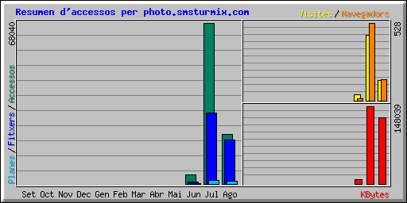

| Resum per mesos | ||||||||||
|---|---|---|---|---|---|---|---|---|---|---|
| Mes | Mitjana diària | Totals del mes | ||||||||
| Accessos | Fitxers | Planes | Visites | Navegadors | KBytes | Visites | Planes | Fitxers | Accessos | |
| Ago 2007 | 1899 | 1705 | 97 | 12 | 145 | 126380 | 136 | 1074 | 18761 | 20898 |
| Jul 2007 | 2194 | 963 | 43 | 14 | 528 | 148039 | 445 | 1354 | 29877 | 68040 |
| Jun 2007 | 388 | 79 | 12 | 3 | 14 | 8060 | 38 | 121 | 794 | 3882 |
| Totals | 282480 | 619 | 2549 | 49432 | 92820 | |||||
| Generated by Webalizer Version 2.01 |